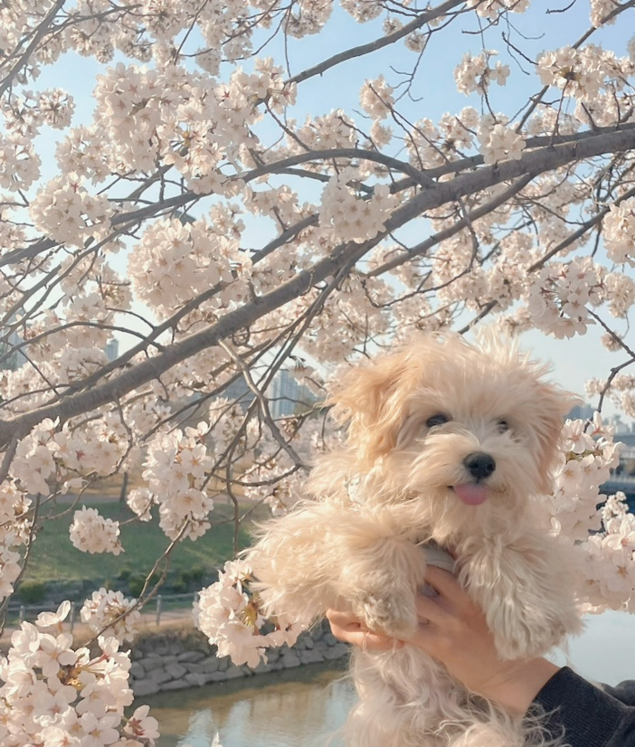
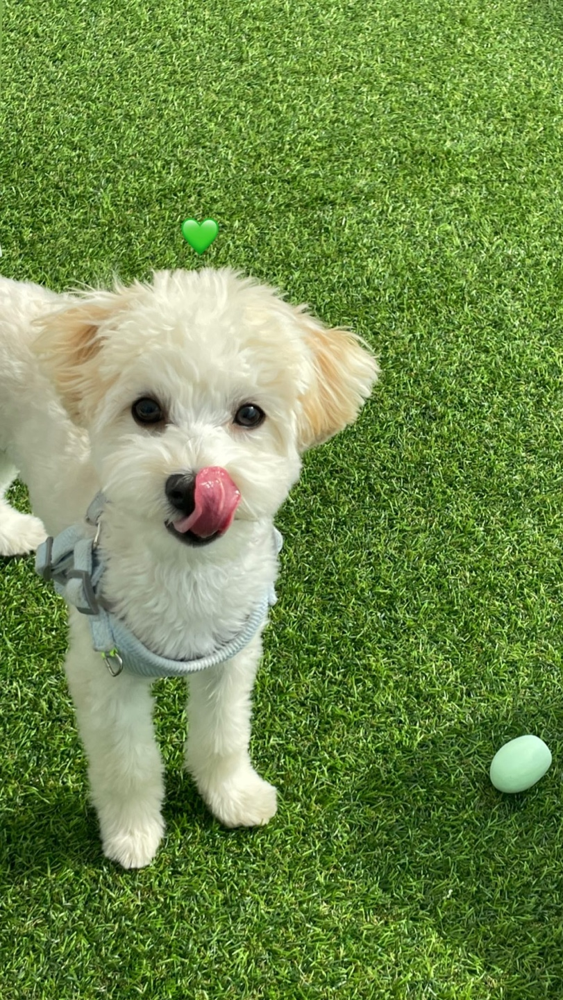
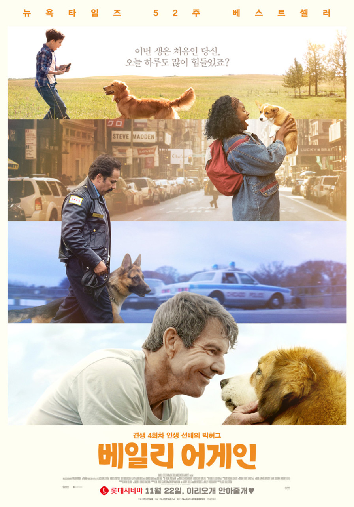

이름
김지용
학과
모바일시스템공학과
취미
- 강아지와 산책하기
- 영화 보기
- 좋아하는 노래 듣기
우리집 강아지 콩이
콩이는 2022년 10월 18일 생으로 2023년 1월 1일에 우리 가족이 됐다.
나와 콩이는 서로가 서로의 껌딱지라고 할 수 있다.


가장 좋아하는 영화
<베일리 어게인>

가장 좋아하는 노래
MBTI
ISFP
특징
- 내향(I)형답게 혼자만의 시간을 좋아한다.
- 전화보다 카톡을 선호한다.
- 공감능력이 뛰어나다.
- 배려형 개인주의 성격으로 물 흐르듯이 사는 편이다.
연락처
이메일: kwwj100@gmail.com